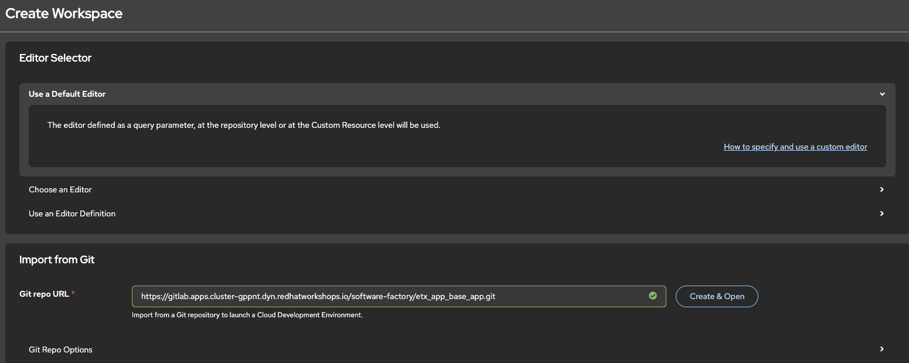
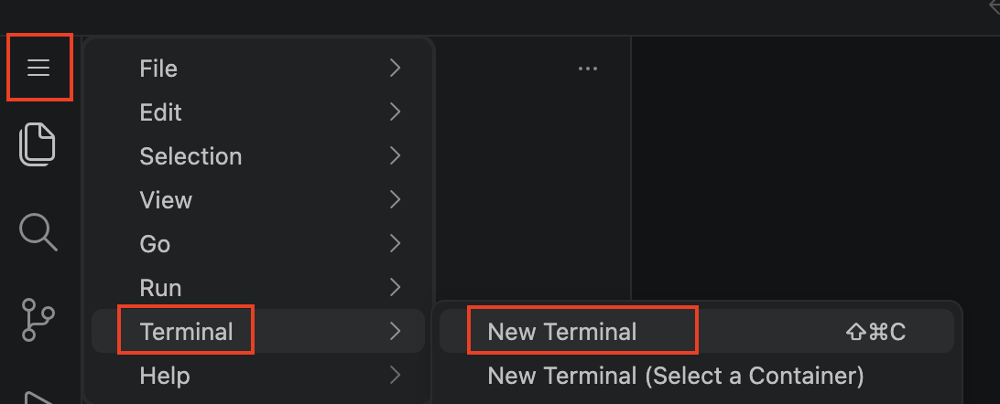
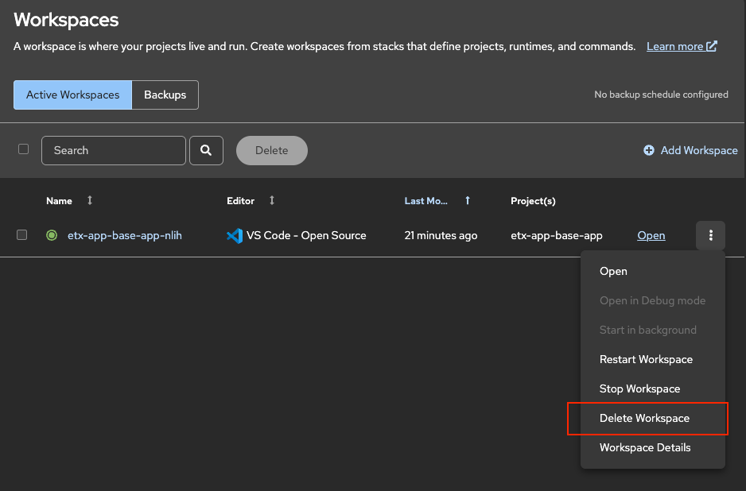

Lab 10: Dev Spaces and IDE Setup
Overview
In this lab you will create a Dev Spaces workspace for the ETX App Base application, configure it with a custom devfile, verify Git and AI assistant integration, and run Quarkus in development mode connected to external PostgreSQL and Kafka services deployed in the cluster.
Access Dev Spaces Dashboard
Get the Dev Spaces dashboard URL:
oc get checluster devspaces -n openshift-devspaces \
-o jsonpath='{.status.cheURL}{"\n"}'Open this URL in your browser and log in with your OpenShift credentials.
| Dev Spaces on OpenShift uses OpenShift OAuth for authentication by design. |
Step 1: Create Initial Workspace
The etx_app_base_app repository does not include a devfile yet. You will create a temporary workspace to add the devfile to the repository.
From the Dev Spaces dashboard:
-
Click Create Workspace
-
Select Import from Git
-
Get the gitlab url from below command:
GITLAB_URL="https://$(oc get route -n gitlab -l app=webservice -o jsonpath='{.items[0].spec.host}')" echo $GITLAB_URL -
Paste the repository URL:
{GITLAB_URL}/software-factory/etx_app_base_app.git
-
Click Create & Open
-
If prompted to authorize with GitLab, follow the OAuth flow and approve access

Dev Spaces will create a workspace using the Universal Developer Image (UDI) since there is no devfile in the repository yet.
Step 2: Configure Git
Once the workspace opens, configure Git identity.
Open a terminal from the main menu (hamburger icon in the top-left corner: ).

Configure Git identity
git config --global user.email "platform-developer@example.com"
git config --global user.name "Platform Developer"Step 3: Create the Devfile
Create a devfile.yaml file that will configure your development environment.
Create the devfile using below command in the newly opened terminal inside devspaces:
cat > devfile.yaml <<'EOF'
schemaVersion: 2.2.0
metadata:
name: etx-app-base-app
components:
- name: development-tooling
container:
image: quay.io/devfile/universal-developer-image:ubi9-latest
env:
- name: QUARKUS_HTTP_HOST
value: "0.0.0.0"
- name: MAVEN_OPTS
value: "-Dmaven.repo.local=/home/user/.m2/repository"
# External service connections
- name: POSTGRESQL_HOST
value: "parasol-db.etx-app-dev.svc.cluster.local"
- name: POSTGRESQL_DATABASE
value: "parasol"
- name: POSTGRESQL_USER
value: "parasol"
- name: POSTGRESQL_PASSWORD
value: "parasol"
- name: KAFKA_BOOTSTRAP_SERVERS
value: "parasol-kafka-kafka-bootstrap.etx-app-dev.svc.cluster.local:9092"
memoryLimit: 5Gi
cpuLimit: 2500m
volumeMounts:
- name: m2
path: /home/user/.m2
endpoints:
- name: quarkus-dev
targetPort: 8080
exposure: public
protocol: https
- name: debug
targetPort: 5005
exposure: none
- name: m2
volume:
size: 1G
commands:
- id: package
exec:
label: "1. Package the application"
component: development-tooling
commandLine: "./mvnw package"
group:
kind: build
isDefault: true
- id: start-dev
exec:
label: "2. Start Development mode (Hot reload + debug)"
component: development-tooling
commandLine: "./mvnw compile quarkus:dev"
group:
kind: run
isDefault: true
- id: init-continue
exec:
label: "Initialize Continue config"
component: development-tooling
workingDir: /home/user
commandLine: |
mkdir -p /home/user/.continue
cat > /home/user/.continue/config.yaml << EOF
name: Continue Config
version: 0.0.1
models:
- name: qwen3-14b
provider: vllm
model: qwen3-14b
apiKey: ${LLM_API_KEY}
apiBase: ${LLM_BASE_URL}
roles:
- chat
EOF
group:
kind: build
events:
postStart:
- init-continue
EOFVerify the devfile was created:
ls -la devfile.yaml
cat devfile.yaml | head -20Step 4: Commit and Push the Devfile
Create a feature branch, commit the devfile, and push to GitLab:
# Create and switch to feature branch
git checkout -b feature/add-devfile
# Add and commit the devfile
git add devfile.yaml
git commit -m "feat: add devfile for Dev Spaces configuration"
# Push to GitLab
git push origin feature/add-devfileStep 5: Recreate Workspace from Devfile
Now delete the temporary workspace and create a new one that will use your devfile.
Delete the Temporary Workspace
-
Return to the Dev Spaces dashboard browser tab
-
Find your workspace in the list

-
Click the three dots (⋮) menu → Delete Workspace

-
Confirm deletion and wait until the workspace disappears
Create Workspace from Devfile{}
You can create a workspace using either a direct URL (faster) or the UI (manual).
-
Direct URL (Recommended)
-
Manual UI
Use a direct URL to create a workspace from a specific branch.
Get the required URLs:
# Get Dev Spaces URL
DEVSPACES_URL="https://$(oc get checluster devspaces -n openshift-devspaces -o jsonpath='{.status.cheURL}' | sed 's|https://||')"
# Get GitLab URL
GITLAB_URL="https://$(oc get route -n gitlab -l app=webservice -o jsonpath='{.items[0].spec.host}')"
# Construct the direct workspace URL
echo "${DEVSPACES_URL}#${GITLAB_URL}/software-factory/etx_app_base_app/-/tree/feature/add-devfile"Open the generated URL in your browser. Dev Spaces will:
-
Automatically import the repository from the feature/add-devfile branch
-
Detect and use the devfile.yaml
-
Configure the workspace with all environment variables and settings
This skips the manual "Create Workspace → Import from Git" flow.
Create a workspace through the Dev Spaces dashboard.
-
Click Create Workspace
-
Select Import from Git
-
Paste the repository URL (use the actual GitLab URL from your cluster):
{gitlab_url}/software-factory/etx_app_base_app/-/tree/feature/add-devfile -
Click Create & Open
Dev Spaces will detect the devfile in the repository and use it to configure your workspace with:
-
PostgreSQL and Kafka connection variables
-
Maven cache persistence
-
Quarkus development endpoints
-
Continue AI assistant initialization
Wait for the workspace to fully start. This may take 2-3 minutes as the container image is pulled and configured.
The direct URL method is faster and can be bookmarked for quick access. You can also specify different branches by changing /tree/feature/add-devfile to /tree/<branch-name>.
|
Verify Workspace Configuration
Once the workspace opens, verify it was configured correctly with your devfile.
Dev Spaces automatically clones the repository when you create a workspace from a Git URL. The repository will be available in /projects/etx_app_base_app.
|
Verify Repository Clone
Open a terminal and verify the repository was cloned correctly.
Or, you can also verify from a workspace terminal, opening from the burger menu on the top right of the IDE, then selecting :
The terminal opens in /projects/etx_app_base_app by default. If you’ve navigated elsewhere, use cd /projects/etx_app_base_app to return.
|
# Verify current branch and recent commits
git branch --show-current
git log --oneline -3
ls -la devfile.yamlYou should see feature/add-devfile as the current branch and the devfile.yaml file in the repository root.
Check Environment Variables
Verify the environment variables from your devfile are present:
echo "POSTGRESQL_HOST: $POSTGRESQL_HOST"
echo "POSTGRESQL_DATABASE: $POSTGRESQL_DATABASE"
echo "POSTGRESQL_USER: $POSTGRESQL_USER"
echo "KAFKA_BOOTSTRAP_SERVERS: $KAFKA_BOOTSTRAP_SERVERS"You should see:
POSTGRESQL_HOST: parasol-db.etx-app-dev.svc.cluster.local
POSTGRESQL_DATABASE: parasol
POSTGRESQL_USER: parasol
KAFKA_BOOTSTRAP_SERVERS: parasol-kafka-kafka-bootstrap.etx-app-dev.svc.cluster.local:9092|
If these variables are empty, the workspace was not created with your devfile. This can happen if:
Go back to Step 5 and recreate the workspace after ensuring the devfile is in the repository. |
Test Service Connectivity
Verify network connectivity to PostgreSQL:
timeout 3 bash -c "echo > /dev/tcp/$POSTGRESQL_HOST/5432" && echo "PostgreSQL connection successful" || echo "PostgreSQL connection failed"Expected: PostgreSQL connection successful
If you get connection errors, verify you completed Lab 2 - Deploy Supporting Services.